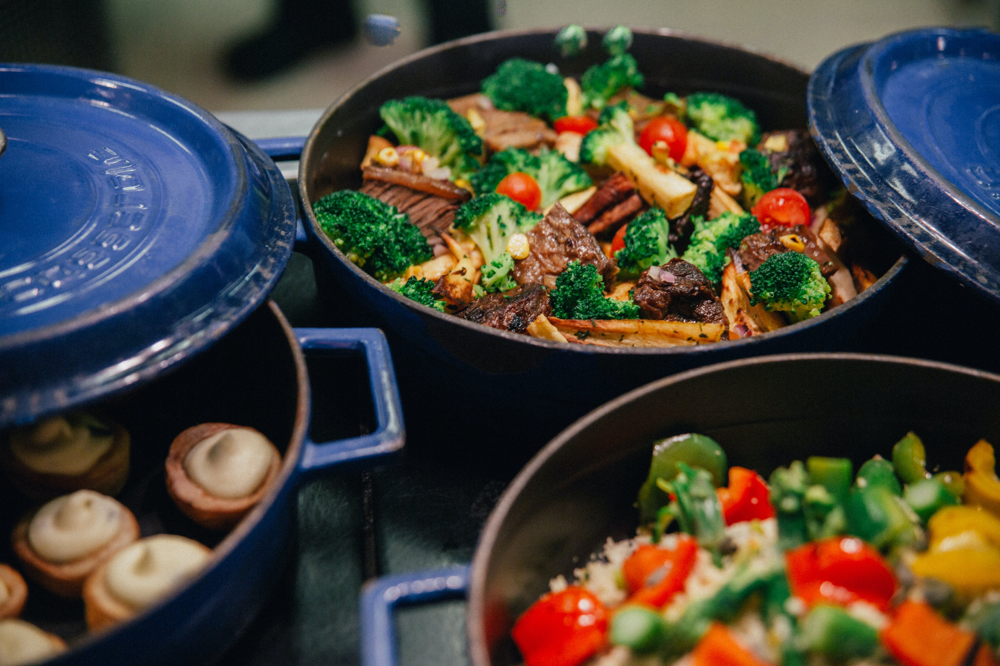

Beef and Vegetable Stir-Fry

Description
Beef and Vegetable Stir-Fry is a quick and flavorful dish packed with tender beef,
crisp vegetables, and a savory sauce.
It's a versatile recipe that can be customized with your favorite veggies and enjoyed with rice or noodles.
Ingredients
- Beef sirloin, thinly sliced
- Bell peppers (red, green, and yellow), sliced
- Broccoli florets
- Carrots, julienned
- Soy sauce
- Garlic, minced
- Ginger, grated
- Sesame oil
- Cornstarch
- Green onions, chopped
- Cooked rice or noodles, for serving
Steps
- In a bowl, mix thinly sliced beef with minced garlic, grated ginger, soy sauce, and a tablespoon of cornstarch. Let it marinate for 15-20 minutes.
- Heat sesame oil in a large skillet or wok over medium-high heat. Add marinated beef and stir-fry until browned and cooked through. Remove from the skillet and set aside.
- In the same skillet, add a bit more sesame oil if needed. Stir-fry sliced bell peppers, broccoli florets, and julienned carrots until tender-crisp.
- Return the cooked beef to the skillet and toss everything together. Adjust seasoning with soy sauce if needed.
- Sprinkle chopped green onions over the stir-fry and give it a final toss.
- Serve the Beef and Vegetable Stir-Fry hot over cooked rice or noodles. Enjoy this flavorful and nutritious dish!
Back to main